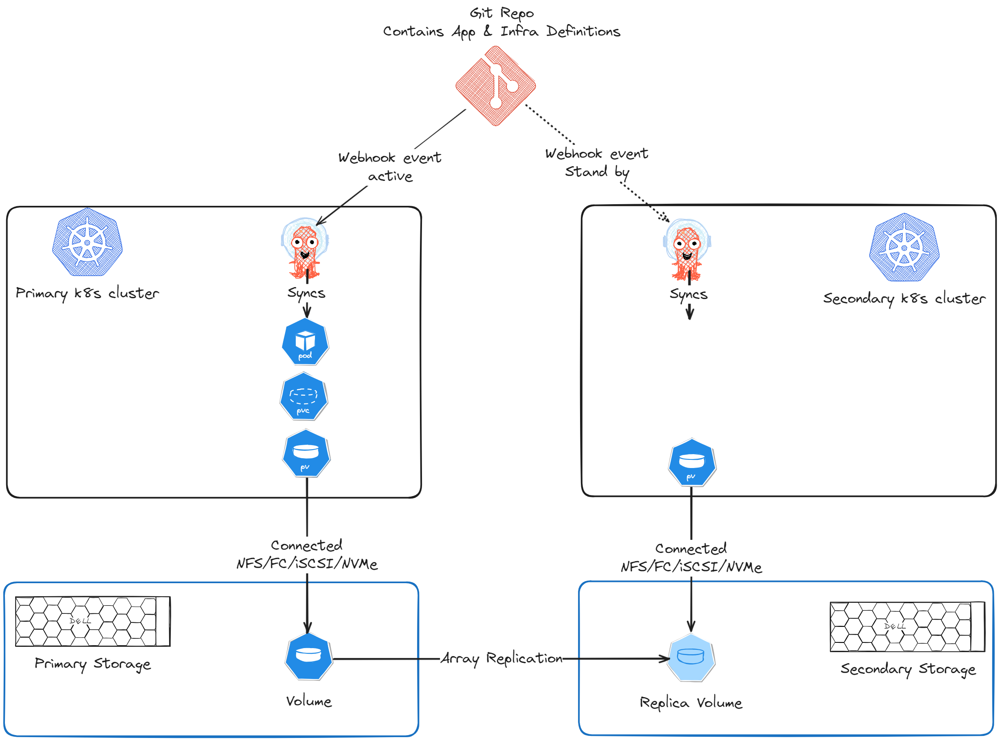

🌩️🛟 Disaster Recovery for VMs on Kubernetes
Author(s): Pooja Prasannakumar & Florian Coulombel
Kubernetes is no longer just a container orchestrator. As organizations modernize infrastructure, there’s growing interest in using Kubernetes to manage virtual machines (VMs) alongside cloud-native workloads—while still meeting familiar expectations like disaster recovery (DR).
In this post, we’ll walk through a practical, GitOps-friendly DR approach for VMs running on Kubernetes using:
- KubeVirt to run VMs on Kubernetes
- Dell Container Storage Modules (CSM) for storage and replication
- CSM Replication to replicate VM disks across clusters
- Argo CD + Kustomize to manage deployment and failover via GitOps
Introduction
The world of virtualization is undergoing a major shift. In recent years we’ve seen vendor consolidation (e.g., Broadcom acquiring VMware), the continued rise of cloud-native and serverless workloads, and broader adoption of alternative hypervisors.
That market context is pushing organizations to re-evaluate traditional VM management. One approach that has gained traction is running VMs on Kubernetes to benefit from Kubernetes’ ecosystem, automation, and resilience.
The KubeVirt project enables VM-based workloads to run alongside containers in Kubernetes. This shared environment can be especially valuable for organizations adopting Kubernetes while still carrying VM-based workloads that cannot easily be containerized.
If you’re new to KubeVirt, the high-level concepts are explained in this lightboard video: KubeVirt overview (YouTube).
On the storage side, Dell Container Storage Modules (CSM) simplify day-2 storage operations for Kubernetes workloads. In this post, we focus on how to provision, protect, and recover storage for VMs on Kubernetes using Dell CSM.
GitOps Disaster Recovery (DR)
Disaster recovery for an application typically means restoring:
- the application runtime (in our case, a VM)
- its configuration
- its data
Many mature Kubernetes teams use GitOps to manage infrastructure and application configuration. With GitOps, the desired state of the system lives in Git, and the platform reconciles the real cluster state toward what’s declared in the repository.
Tools like Argo CD continuously apply changes from Git repositories to the target clusters. In this model, a DR event can be handled by a controlled change in Git (often a pull request) to move the workload from one site/cluster to another.
In the approach below:
- VM manifests are deployable to either cluster
- The VM disk is replicated from primary to secondary via CSM Replication
- A failover is driven by storage replication failover + GitOps changes
Configure Two Kubernetes Clusters for CSM Replication
CSM Replication brings array-based replication and DR workflows to Kubernetes clusters.
At a high level, you will:
- Configure a pair of storage arrays for replication.
- Configure the CSI driver:
- Primary cluster CSI driver communicates with the primary array
- Secondary cluster CSI driver communicates with the secondary array
- Install CSM Replication on both clusters.
- Configure replicated StorageClasses on both clusters:
csi-replicated-scon the primary cluster- a matching replicated StorageClass on the secondary cluster

Configure Argo CD to Deploy the VM to Both Clusters
The VM-based application should be deployable via Argo CD to either cluster. Common approaches for environment-specific overrides are Helm values or Kustomize overlays .
In this example, we use Kustomize to manage cluster-specific differences.
Prepare the application repo (Kustomize overlays)
In your Git repository, create separate overlays for primary and secondary clusters.
Example references (used in the lab repo):
- Primary overlay:
- primary/kustomization.yaml
- Secondary overlay:
- secondary/kustomization.yaml
In the primary overlay:
- Use the replication source StorageClass (
csi-replicated-sc) for the VM disk PVC. - If the VM disk image needs to be pre-populated, add CDI annotations on the PVC to define the source image.
- Patch the VM
runningfield totrue.
In the secondary overlay:
- Patch the PVC to remove CDI annotations.
- Patch the VM
runningfield tofalse.
Tip: Keeping the VM defined on both clusters—but only running on one—sets you up for fast failover.
Configure Argo CD (ApplicationSet)
- Register both clusters with Argo CD.
- Create an ApplicationSet for the VM.
- Use a list generator to deploy the VM to both clusters as destinations.
A complete example is available here:
This ApplicationSet will create:
- One Argo CD Application targeting the primary cluster
- One Argo CD Application targeting the secondary cluster
After syncing:
- The VM should be Running on the primary cluster
- The primary volume should be replicated to the secondary array
- The secondary cluster should have a read-only PV corresponding to the replica volume
Disaster Recovery (Failover)
If the primary cluster loses connectivity to the primary array—or if the primary site is impacted by a disaster—you can recover on the secondary site.
The failover has two parts:
- Fail over the storage replication so the replica becomes writable.
- Flip the GitOps desired state so the VM stops on primary and starts on secondary.
1) Initiate failover using CSM Replication
Initiate a failover using either:
- the
repctlCLI, or - by editing the
DellCSIReplicationGroupobject for the volume
The official DR procedure is documented here:
After the failover:
- The PV on the secondary cluster switches from ReadOnly to ReadWrite.
2) Update GitOps overlays (PR-driven failover)
Next, update the repo so:
- Primary overlay sets VM
running: false - Secondary overlay sets VM
running: true
A concrete PR example:
Additionally, update the secondary PVC to point to the replica PV by changing the volumeName attribute appropriately.
Once Argo CD syncs the updated state:
- The VM is stopped on primary
- The VM starts on secondary
- The VM disk uses the replica volume
- Data written before the disaster is retained after recovery
Conclusion
Running VMs on Kubernetes offers a compelling set of benefits:
- A shared platform for VM and cloud-native workloads
- GitOps workflows for consistent operations
- Multi-cluster and multi-site architectures
At the same time, virtualization has decades of established operational patterns, and these need to be adapted thoughtfully to Kubernetes.
In this post we focused on disaster recovery for KubeVirt-based VMs using CSM Replication and Argo CD. There’s much more to explore around networking, backups, data protection, and operational visibility.
Stay tuned for more content about KubeVirt 🤖☁️💻